Öva SRC-provet och nödanrop
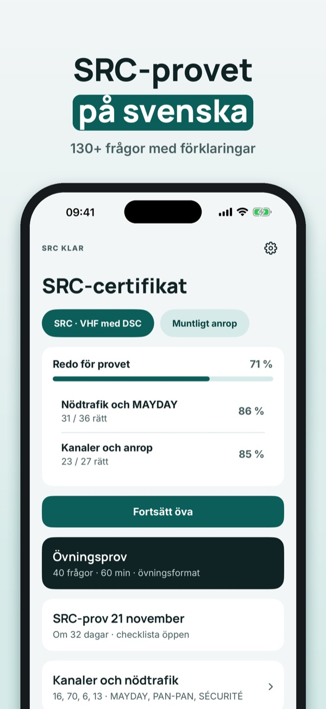
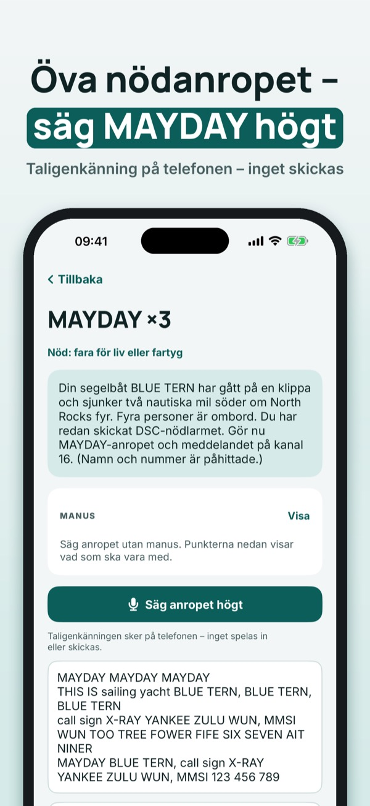
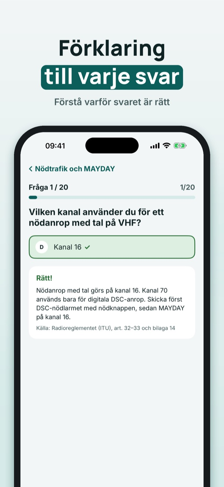
SRC Klar hjälper dig att öva inför SRC-certifikatet för VHF med DSC – med anropsprocedurer som du övar med rösten.
Du kan öva 20 frågor, ordlistan och checklistan utan köp. Fullversionen är ett engångsköp som låser upp alla frågor, övningsprov och anropsövning med rösten. Ingen prenumeration.
SRC Klar är fristående och inte kopplad till Transportstyrelsen, PTS eller någon provanordnare. Provet gör du hos en kursarrangör.
Terms of Use (EULA): https://www.apple.com/legal/internet-services/itunes/dev/stdeula/
Privacy: https://baytechbv.github.io/privacy/src-vhf-nordic/
Øv til SRC-prøven og nødanrop
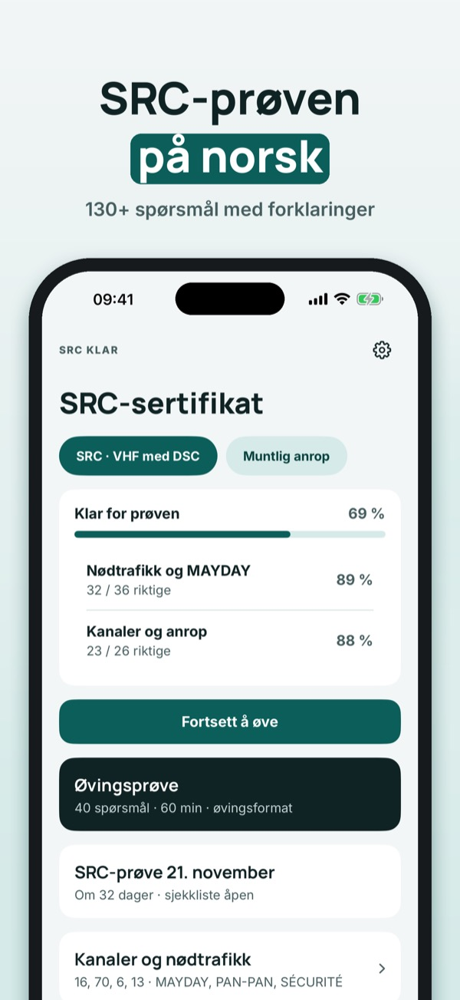
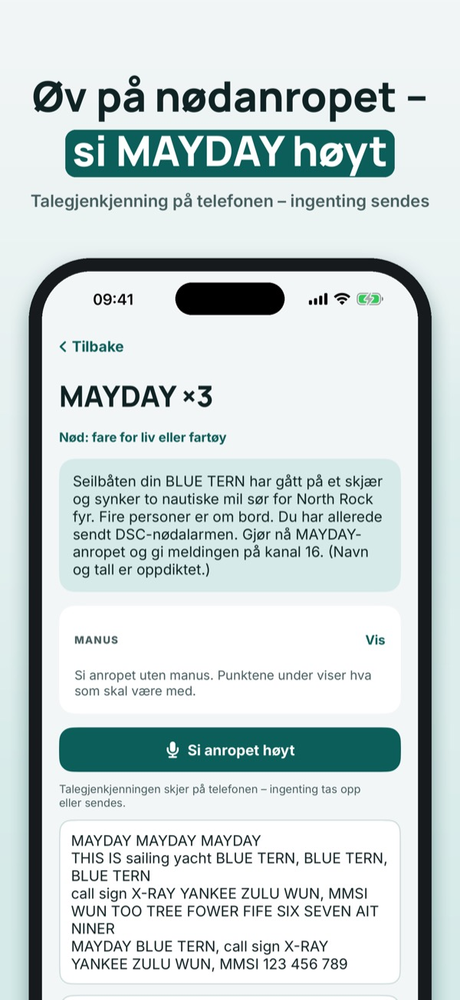
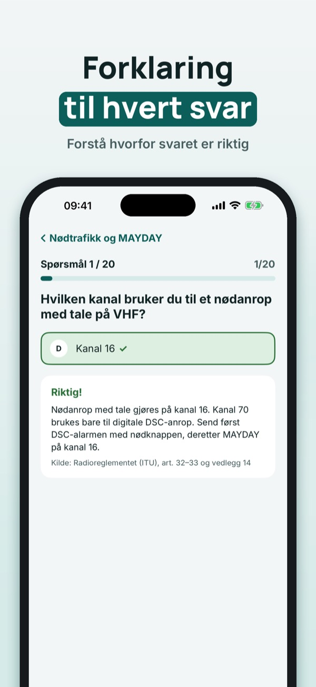
SRC Klar hjelper deg å øve til SRC-sertifikatet for VHF med DSC – med anropsprosedyrer du øver med stemmen.
Du kan øve på 20 spørsmål, ordlisten og sjekklisten uten kjøp. Fullversjonen er et engangskjøp som låser opp alle spørsmål, prøvetester og anropsøving med stemmen. Ingen abonnement.
SRC Klar er uavhengig og ikke tilknyttet Nkom, Sjøfartsdirektoratet eller noen prøvearrangør. Prøven tar du hos en kursarrangør.
Terms of Use (EULA): https://www.apple.com/legal/internet-services/itunes/dev/stdeula/
Privacy: https://baytechbv.github.io/privacy/src-vhf-nordic/
Øv til SRC-prøven og nødopkald
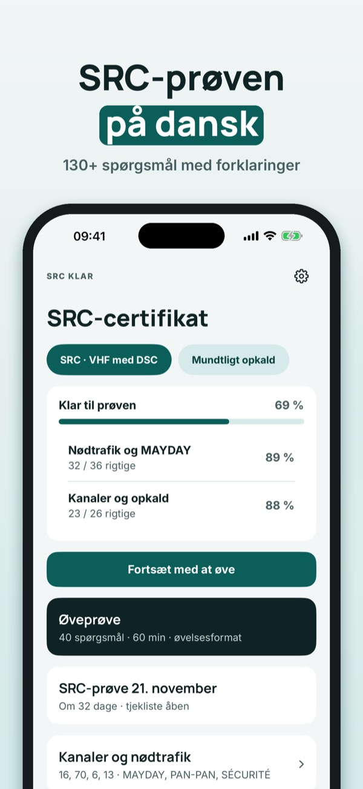
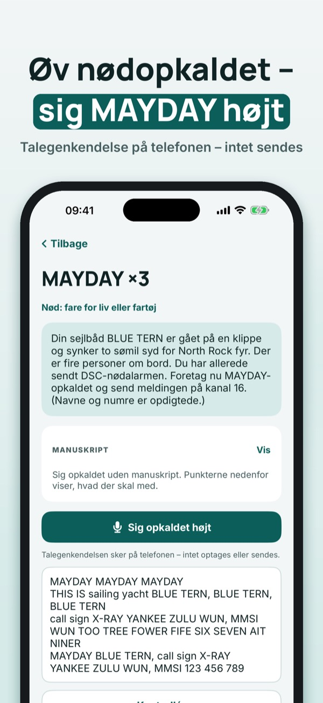
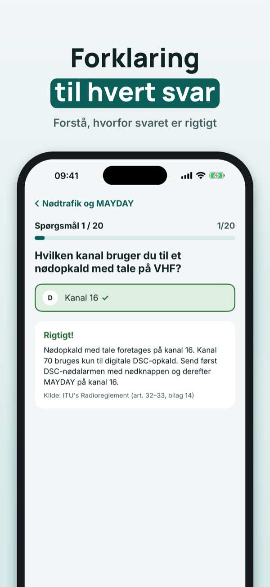
SRC Klar hjælper dig med at øve til SRC-certifikatet for VHF med DSC – med opkaldsprocedurer, du øver med stemmen.
Du kan øve 20 spørgsmål, ordlisten og tjeklisten uden køb. Den fulde version er et engangskøb, der låser alle spørgsmål, prøveeksamener og opkaldsøvelser med stemmen op. Intet abonnement.
SRC Klar er uafhængig og ikke tilknyttet Søfartsstyrelsen eller nogen prøveudbyder. Prøven tager du hos en kursusudbyder.
Terms of Use (EULA): https://www.apple.com/legal/internet-services/itunes/dev/stdeula/
Privacy: https://baytechbv.github.io/privacy/src-vhf-nordic/
SRC-koe ja hätäkutsut suomeksi
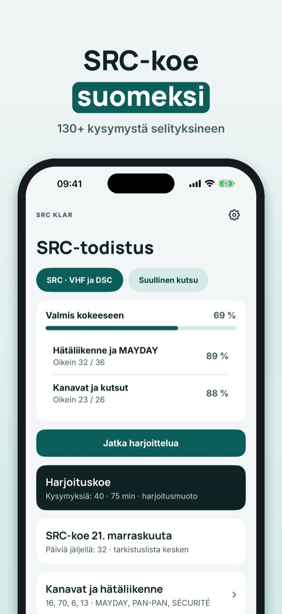
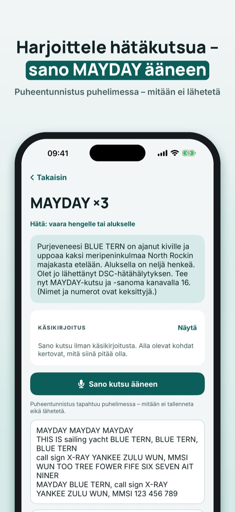
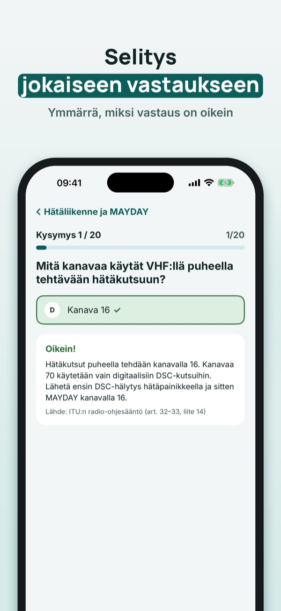
SRC Klar auttaa harjoittelemaan SRC-todistusta varten, kun käytät DSC-VHF-radiota – kutsumenettelyt harjoitellaan omalla äänellä.
Voit harjoitella 20 kysymystä, sanastoa ja tarkistuslistaa ilman ostoa. Täysi versio on kertaosto, joka avaa kaikki kysymykset, koeharjoitukset ja kutsuharjoitukset äänellä. Ei tilausta.
SRC Klar on itsenäinen eikä liity Traficomiin tai mihinkään kokeen järjestäjään. Kokeen suoritat koulutuksen järjestäjän kautta.
Terms of Use (EULA): https://www.apple.com/legal/internet-services/itunes/dev/stdeula/
Privacy: https://baytechbv.github.io/privacy/src-vhf-nordic/
Oefen voor je marifoonbewijs
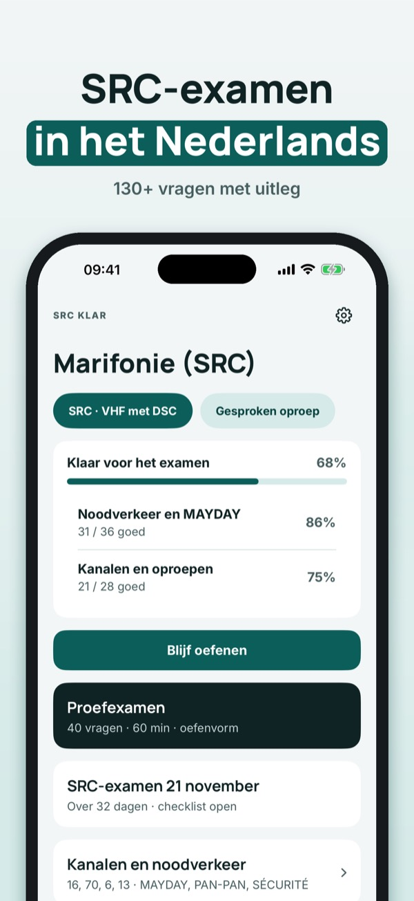
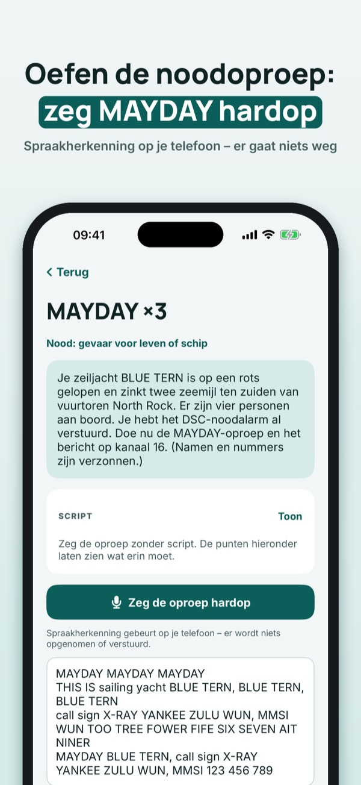
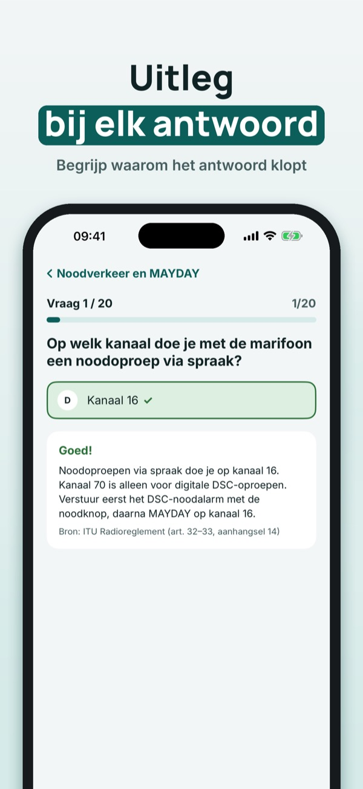
SRC Klar helpt je oefenen voor het marifooncertificaat (SRC) voor VHF met DSC – met oproepprocedures die je met je stem oefent.
Je kunt 20 vragen, de begrippenlijst en de checklist zonder aankoop gebruiken. De volledige versie is een eenmalige aankoop die alle vragen, proefexamens en oproepoefeningen met je stem ontgrendelt. Geen abonnement.
SRC Klar is onafhankelijk en niet verbonden aan de overheid of een examenbureau. Je examen doe je bij een examenorganisatie.
Terms of Use (EULA): https://www.apple.com/legal/internet-services/itunes/dev/stdeula/
Privacy: https://baytechbv.github.io/privacy/src-vhf-nordic/
Üben für SRC und Notverkehr
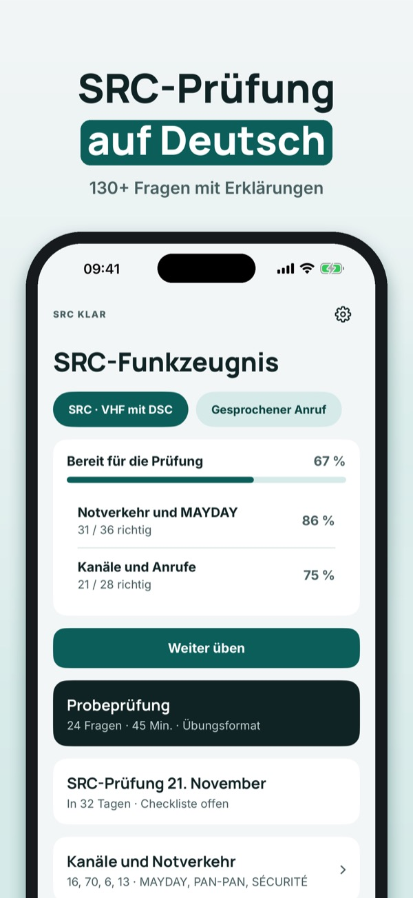
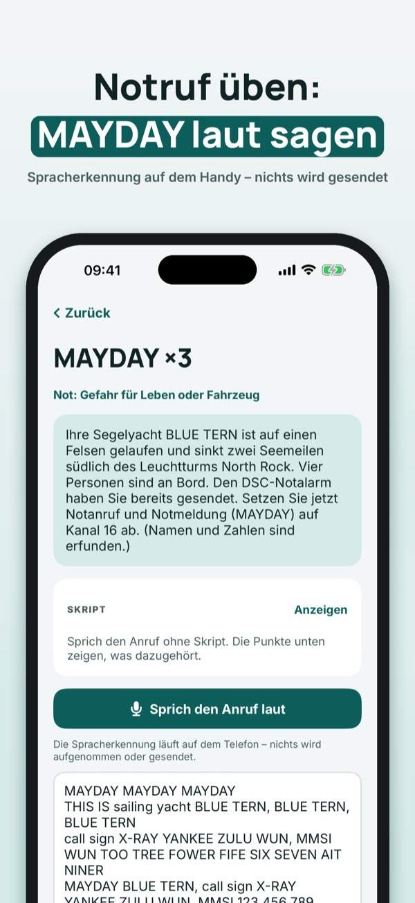
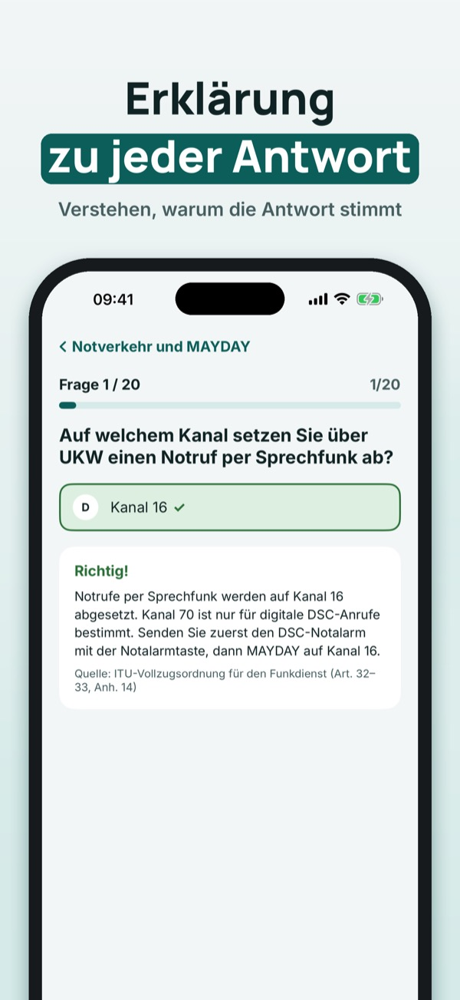
SRC Klar hilft dir, für das Short Range Certificate (UKW mit DSC) zu üben – mit Funkverfahren, die du mit deiner Stimme übst.
20 Fragen, die Begriffe und die Checkliste kannst du ohne Kauf nutzen. Die Vollversion ist ein Einmalkauf und schaltet alle Fragen, Simulationen und das Üben der Funksprüche mit der Stimme frei. Kein Abo.
SRC Klar ist unabhängig und nicht mit Behörden oder Prüfungsausschüssen verbunden. Die Prüfung legst du beim Prüfungsausschuss ab.
Terms of Use (EULA): https://www.apple.com/legal/internet-services/itunes/dev/stdeula/
Privacy: https://baytechbv.github.io/privacy/src-vhf-nordic/